3CX, right in the PC
EasyIsland registers as the WebRTC phone of your extension: call, answer, transfer, voicemail with transcription, queues and a real-time team.
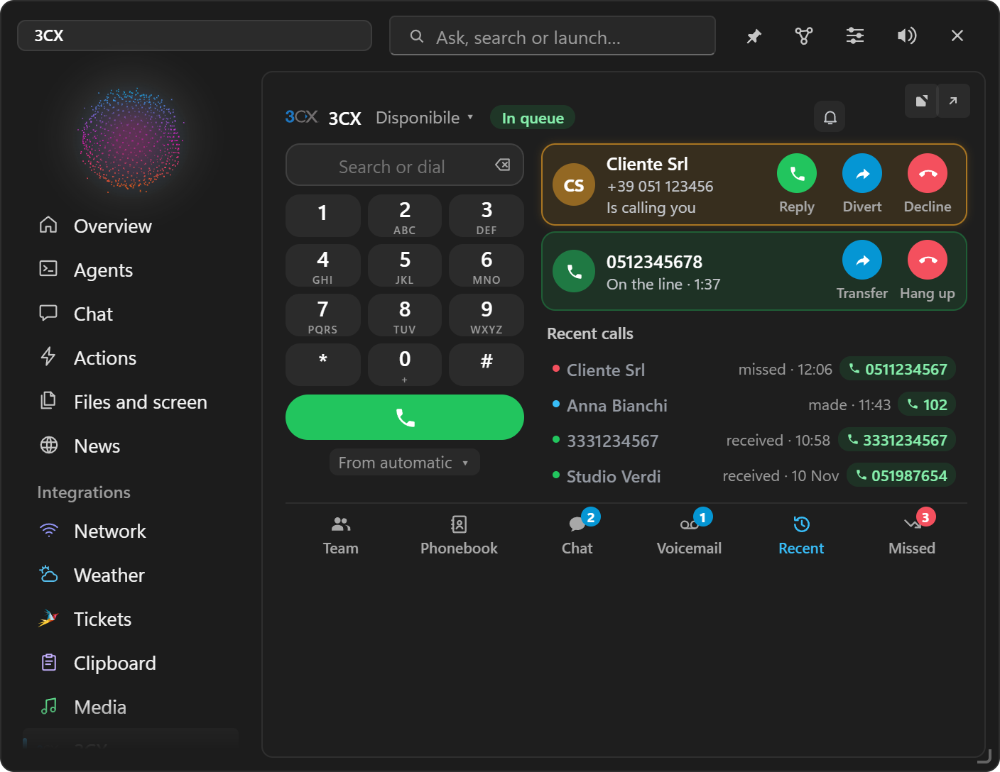
EasyIsland lives at the top of your Windows screen. Approve Claude Code, Codex, opencode and Gemini CLI in one click, hand off whole tasks, and keep a second brain of your clients and projects. With the AI engine you choose.
Free and open source (MIT) · Windows 10/11 · English or Italian · no telemetry
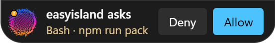
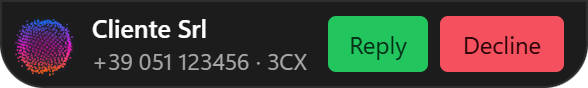
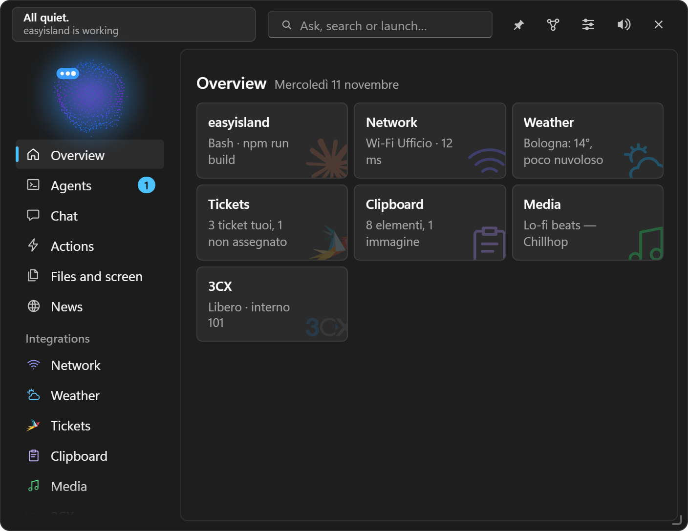
Coding sessions become live cards: progress, steps and file changes in real time. When an agent needs you, the answer is next to the character. Look up: the island just asked you something.
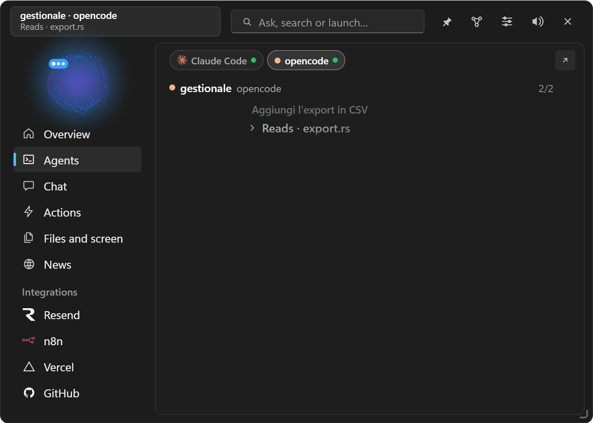
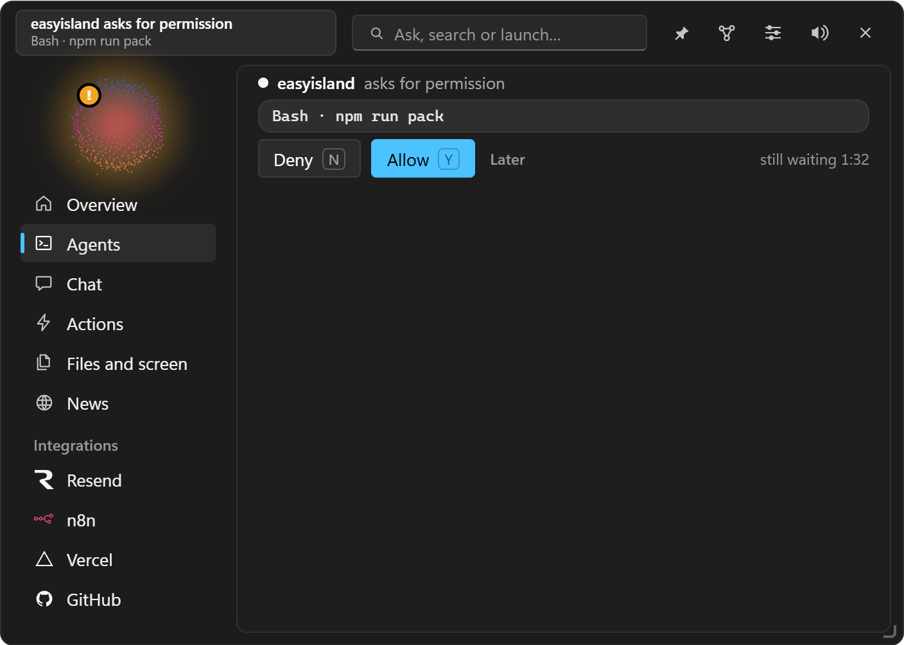
Since 1.0 EasyIsland is a personal agent: it plans, uses your tools, asks only what only you know, and remembers. Its memory is a second brain you can walk through.
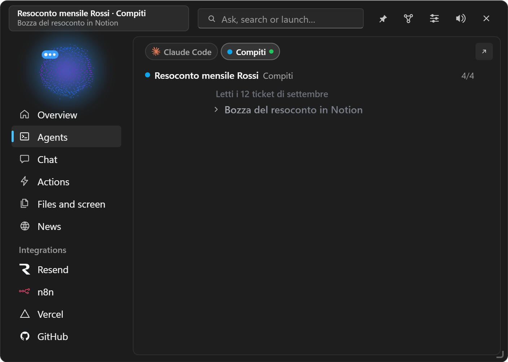
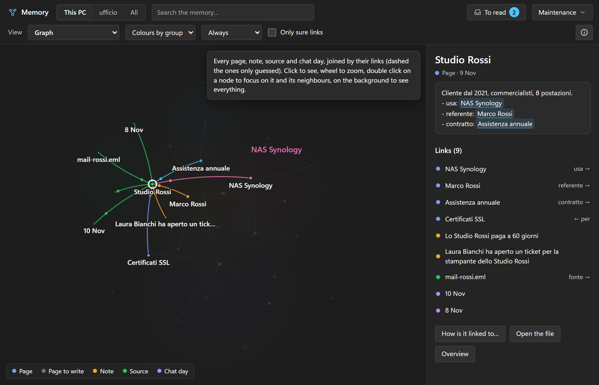
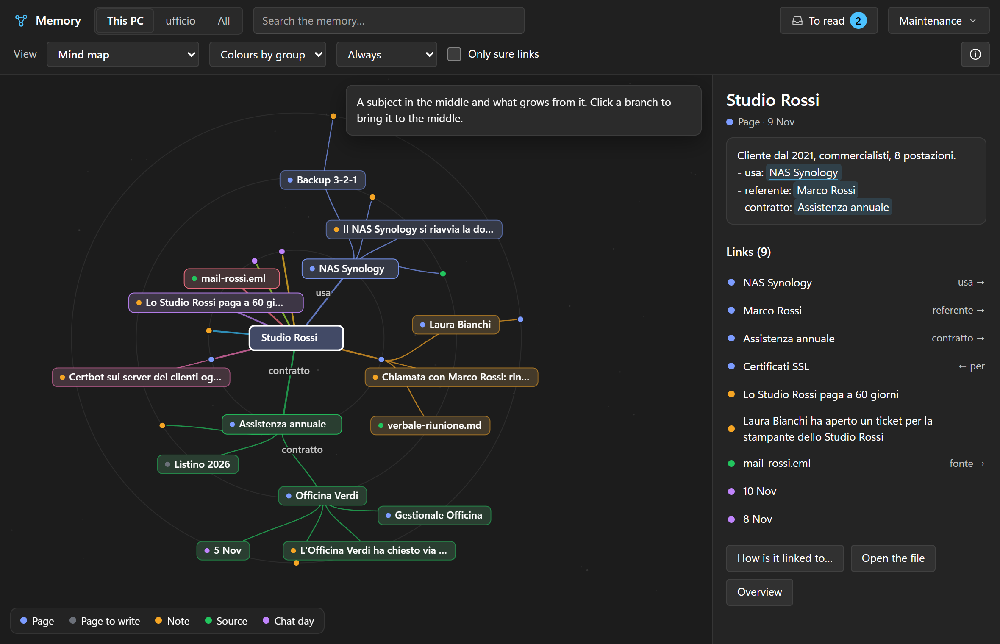
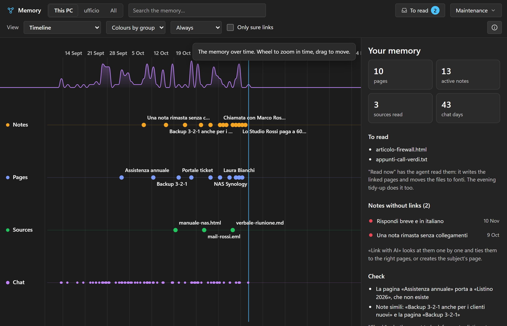
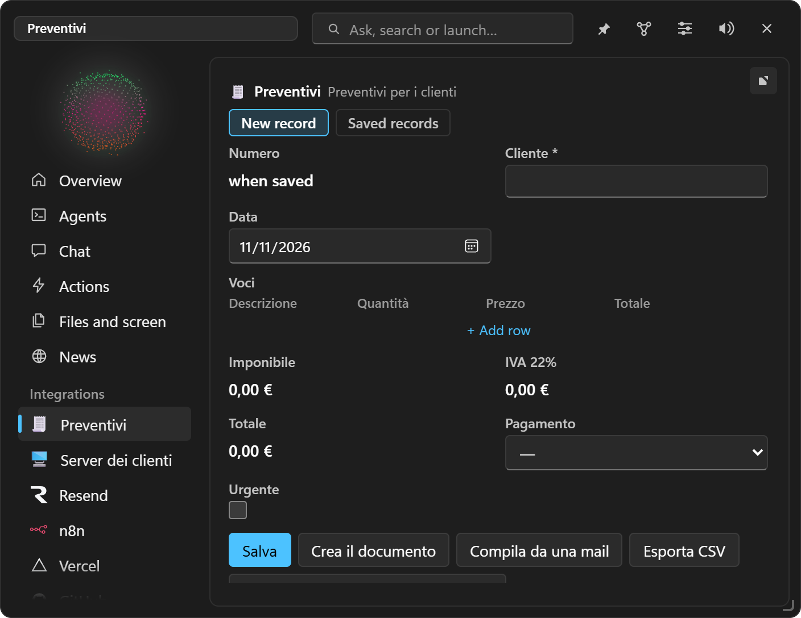

Your Claude subscription with no key, an API key, or a model running on your own PC. The chat can use the PC through EasyIsland, with Allow / Deny on everything that changes something.
EasyIsland registers as the WebRTC phone of your extension: call, answer, transfer, voicemail with transcription, queues and a real-time team.

Select text anywhere and your actions appear at the mouse. Rewrites show before/after and paste only after "Replace".
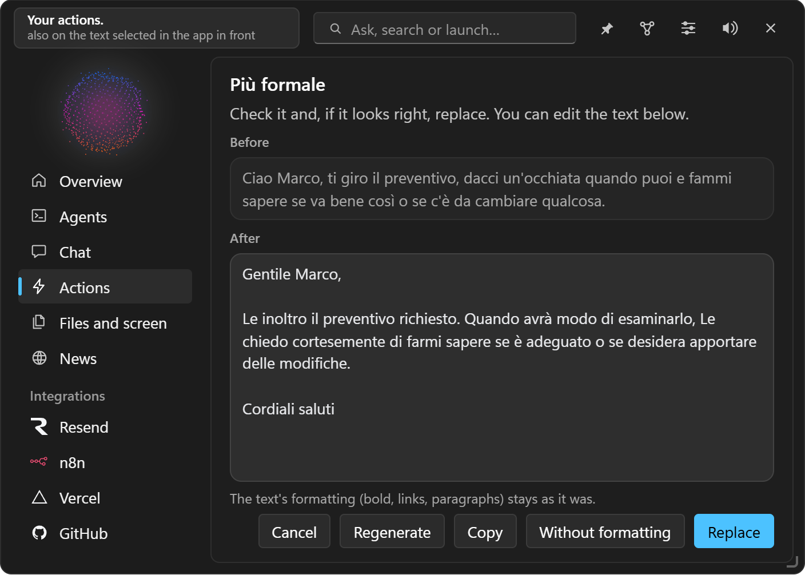
Integrations, actions, programs, memory, tickets and contacts. Ctrl+Enter asks the chat instead.
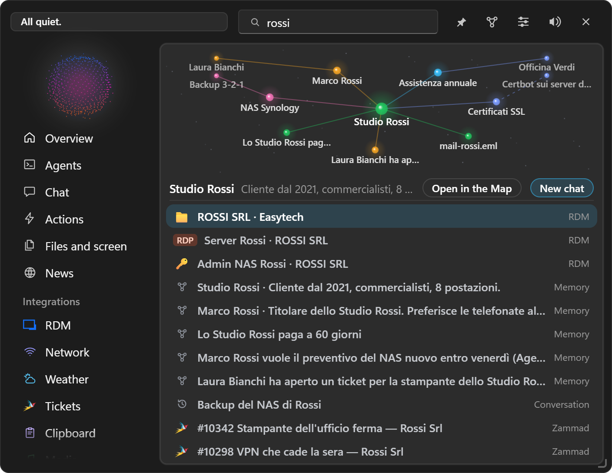
Zammad, Outlook, Teams, Notion, Telegram, WinRM and SSH, Remote Desktop Manager. Missing one? Ask the chat and it becomes a custom integration.
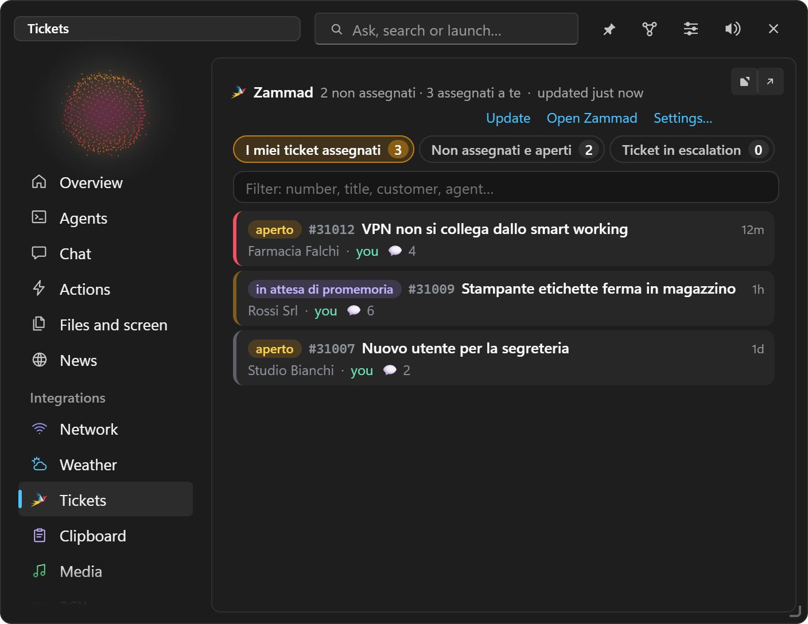
Automations written in plain words in the chat, or suggested from your habits.
Each integration sits in the menu with its logo and a dot when there's news. Plus widgets for sites, certificates, domains, servers, calendars and APIs.


Eleven characters drawn in code, or your own logo in their place. Windows 11 or Classic style, light or dark. With the island tucked away the CPU stays at ~0%.


The network is used only for the services you configure and the update check, which you can turn off.
Keys and passwords live in the Windows Credential Manager. Never on disk, never in git.
Nothing installs on its own, and every update has a verified signature.
Get EasyIsland-Windows-setup.exe from the releases. Current user only, no administrator.
The installer isn't signed yet: SmartScreen shows a warning, click More info → Run anyway.
Notification area icon → Settings → Coding agents → Install, then pick the engine on the Chat page.
New in 1.0.43: import skills from files and folders, with an engine that adapts them.